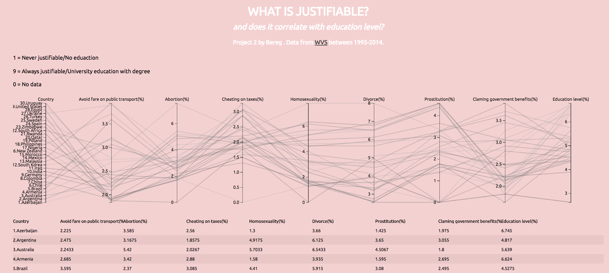

I started by looking at the WVS website and decided to investigate what the world think is justifiable. I also wanted to see if that is correlated with the highest educational level in that country. My hypothesis was that countries with higher education level would think that e.g. homosexuality and abortion are justifiable and that cheating on taxes and avoid fares are not justifiable. I selected the latest wave (2010-2014) and randomly choose the countries as shown below.

Then I selected following variables which I thought were interesting:
It was only possible to show the results of one variable at a time, and it was presented like this for "Abortion":

To visualize the results you can choose between e.g. bar graph and pie chart:


In these graphs you can see that many countries doesn't think that abortion is justifiable and that Morocco has a low education level, but there is no way to see if the variables are connected.
But one thing you can see is how the results from each country vary over the waves, as in Argentina where the percent of “Never justifiable” is decreasing:

In my second analytic trail I will present how I improved the WVS visualization tool.
First I downloaded the data of each wave and variable to Excel, and it looked like this:

The mean values of each variable were put in a new Excel document with one sheet for every wave.

In order to get a mean value of the education level, I gave every answer a score between 1 and 9, where 9 was classified as the highest education level. When calculating this, I took the total number of answers and percent per answer into account.

To be able to show the data from all four waves in the same visualization, I simplified it by calculating a mean of all waves in a new sheet. Then I converted this sheet to a CSV-file which I used in my visualization.

My visualization is inspired by this D3 example which I have modified. The result looks like this:
I decided to use parallel coordinates since I wanted to show 8 variables at the same time and give a good overview of the data. In my visualization, it is possible to hover over the countries to highlight the data and see the connections, like this:

You can also brush to mark specific data in order to understand correlations across the dimensions. The corresponding countries with all 8 mean values are then shown below the parallel coordinates.

In the example above you can see that the countries with the highest education level are the ones most likely to cheat on taxes, which contradicts my hypothesis.

By looking at the countries with the highest education level, I saw no correlation with the other variables except cheating on taxes. The data were spread all over the axes and therefore there must be other factors involved.
Click here to see my visualization.